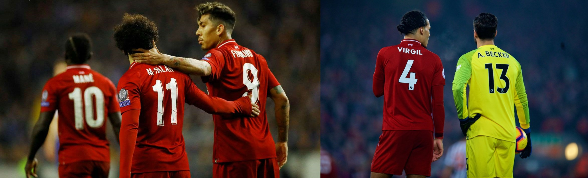

How English is the English Premier League?
An Analysis of Premier League Players' Nationalities Over Time
The 2019 UEFA Champions League Final in Madrid was a moment of pride for England's Premier League as it was just the second all-English final in the history of the competition. While watching it a question crossed my mind after I noticed something, "How English is the English Premier League?" My favorite club, Liverpool FC, who were playing in that game were led by the attacking trio of Mane, Salah, and Firmino and backed in defense and in goal by Virgil van Dijk and Alisson Becker, respectively. These five players, arguably Liverpool's finest if not their most famous, are not English.
During the final between these two English clubs only 10 of the 28 players (36%) that played in the game were English. This proportion is actually in line with the overall English representation in the Premier League today. Those that regularly watch the Premier League may not find this statistic shocking, but the purpose of this exercise is to dig into the data, not just observations and anecdotes.
Since the Premier League was renamed as such before the 1992-1993 season, the percent of total league minutes played by English players has decreased from 68% to 33%.
To derive those percentages, player specific data were scraped from Sports Reference's football/soccer database and summarized to the national team level. Before continuing, there are a few things to note and keep in mind concerning this dataset:
- The Premier League currently has 20 clubs playing 38 games each. The seasons beginning in years 1992-1994 had 22 clubs playing 42 games each. Those seasons' totals were normalized against the average number of total minutes per season since, roughly 750,000 minutes, to be accurately included in this analysis.
- Players from nations that no longer exist were evaluated and reassigned to a modern equivalent. For example, Slavisa Jokanovic was born in and represented Yugoslavia. His birth city of Novi Sad, SFR Yugoslavia is within modern Serbia, and thus he was reassigned as such. A similar example is USSR to Russia.
- There is not always a direct relationship between birth country and nationality/national team. One only has to remember the number of players born in Germany that represented team USA when Klinsmann was running the show to know this is true.
Now, let's dive into it!

Things are looking grim for English players wanting to play in today's Premier League. In the normalized 1992-1993 season they accounted for 511,204 minutes. Last season? Only 224,821... a 56% drop. The -9,859 slope of the overall trend line means each successive season English players are playing 9,859 fewer minutes. At this rate and if accounting for a full game played - 90 minutes - across the league English players are playing 109.5 fewer games each season. However, all is not lost. The league's front office seemed to have noticed this trend and started to enforce the "Homegrown Player Rule" before the 2010-2011 season. If we break this up and compare the trend lines before and after the rule's implementation we see it may be responsible for some leveling out: -14,779 and -3,781, respectively.
If English players are not playing as many minutes as they used to, who is filling their void?

Though English players only accounted for 225,000 minutes played during the most recent season, no other individual country has ever tallied more than 70,000 in a single season. The highest total for any single country in a season belongs to France in 2002-2003. With a sum of 69,341 minutes, Nicolas Anelka, Thierry Henry, William Gallas, Youri Djorkaeff, and Sylvain Distin represented Les Bleus quite well with over 3,000 minutes each.
We may start to get a clearer picture of why this trend is happening when we look at the number of distinct nations represented. In the 1992-1993 season, players from 30 nations stepped onto the pitch during a game. In 2018-2019, that number jumps up to 65. When compared with Europe's remaining "Big Five" leagues, the Premier League was the most diverse of the bunch during the 2018-2019 campaign.
| League | Number of Nations Represented |
|---|---|
| England: Premier League | 65 |
| France: Ligue 1 | 62 |
| Italy: Serie A | 56 |
| Germany: Bundesliga | 55 |
| Spain: La Liga | 52 |
Alright, no single nation is making a profound impact on England's decreasing representation in its own league - it's becoming more diverse - but which nations are having the strongest impacts?
For this analysis I filtered the nations to only those with a significant number of minutes played to reduce noise and then calculated the percent change between each remaining nation's average and weighted moving average of all their Premier League minutes played.

Belgian Red Devils are acquiring relatively significant playing time across the league. Meanwhile, those from Scandinavian, British Isles, and former British colony nations are losing ground. When inspecting the "trending-up" side of the chart, notice it is littered with nations that have found major success in the last five FIFA World Cups. These include champions: France, Germany, Spain, and Brazil; runners-up: Netherlands, Argentina, France, and Germany; and third-place finishers: Belgium, Netherlands, and Germany.
It is true the Premier League is English, but The Three Lions lost their majority representation and now only maintain a plurality because players are coming in from all corners of the world and clubs are awarding more playing time to players from countries with successful national teams. However, I am curious about the rumored impacts of Brexit on the Premier League's ability to recruit and retain foreign players and how those political changes will impact these figures henceforth.
Just for fun...
Play around with the following map to visualize players based on their birth city. Select a season from the first drop down to display all players who played during that season or use the second drop down to display an individual player. Both options include player details such as their city of birth, nationality, and total minutes played.
Still want more? Check out the entire disaggregated, player-level dataset here. Does something look off or do you have any questions? Get in touch!